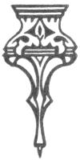
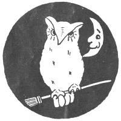

[1]
Helps and Hints
for
Hallowe’en
By
Laura Rountree Smith

MARCH BROTHERS, Publishers
208, 210, 212 Wright Ave., Lebanon, Ohio
[2]
COPYRIGHT, 1920, By
MARCH BROTHERS
|
PAGE |
| Introduction |
5 |
| Party Suggestions: |
|
| Nut-Crack Night |
7 |
| Hallowe’en Stunts: |
|
| A Shadow Play |
11 |
| The Black Cat Stunt |
13 |
| A Pumpkin Climbing Game |
14 |
| Exercises: |
|
| Hallowe’en Acrostic |
15 |
| Take Care, Tables are Turned! |
16 |
| Drills: |
|
| Clown Drill and Song |
18 |
| Autumn Leaf Drill |
20 |
| Cat-Tail Drill |
22 |
| Muff Drill |
24 |
| Dialogs and Plays: |
|
| The Hallowe’en Ghosts |
26 |
| On Hallowe’en Night |
29 |
| Jack Frost’s Surprise |
35 |
| An Historical Hallowe’en |
39 |
| The Witch’s Dream |
45 |
| A Hallowe’en Carnival and Wax-Work Show |
50 |
| The Play of Pomona |
55 |
| Hallowe’en Puppet Play |
61 |
SEND FOR OUR COMPLETE
CATALOG IN WHICH WILL BE
FOUND ALL THE ACCESSORIES
NEEDED IN CARRYING OUT THE
IDEAS GIVEN IN THIS BOOK.
March Brothers, Publishers
208, 210, 212 Wright Ave., Lebanon, Ohio
Hist! be still! ’tis Hallowe’en,
When fairies troop across the green!
On Hallowe’en when elves and witches are abroad,
we find it the custom over all the world to build bonfires,
to keep off evil spirits; and this is the night of
all nights to entertain friends with stunts similar to
those performed two hundred years ago. On this
night fortunes are told, games are played, and if it
so happens that your birthday falls on this night, you
may even be able to hold converse with fairies—so
goes the ancient superstition!
So, careful be on Hallowe’en,
Whenever you come out;
So, careful be on Hallowe’en,
The witches are about!
Hallowe’en had its origin in the old Druid festival.
The Druids kept fires burning all the year in honor
of the sun-god. On the last night of October, they
met at the altars where their fires were burning, put
them out with much pomp and ceremony, and again
relighted them. They took embers from the new fires,
returned home and kindled fires on their own hearths.
Superstition had it, that a home where one of these[6]
fires burned constantly, throughout the year, was protected
from all evil. Later on, any fire kept evil
spirits away. While each country still has its own
witches, fairies and ghosts, they all agree the night
of October 31st is a great time for celebrations.
This little book will be found useful in school,
church and home, in planning celebrations for
Hallowe’en.
The very air is full of magic, so,
LET’S WRITE AN INVITATION HEARTY,
ON HALLOWE’EN NIGHT, TO A NUT-CRACK PARTY.

[7]
Party Suggestions
Nut-Crack Night
[In the northern part of England, Hallowe’en is
still called Nut-Crack Night.]
For a Nut-Crack Night Party, write invitations on
a pumpkin-shaped booklet, cut double, with face of
Jack-o’-Lantern painted outside; inside write:
On Nut-Crack Night you’ll meet your fate,
Please come at eight, do not be late;
What mysteries are to be seen,
You will not know ’til Hallowe’en.
Decorate your rooms with yellow and black tissue
paper streamers, and hang from the ceiling by
threads, cats, owls, bats and witches cut from black
paper. Pinned on the curtains and screens they give
a weird effect. Light the rooms with Jack-o’-Lanterns
or electric candles.
The usual nut-cracking, floating walnut shells in
tubs, throwing apple paring three times over head
and at last on the floor, to show initials of name of
future husband, may be indulged in. Have sets of
letters of the alphabet in a basket, allow guest
to take a handful and arrange name of lad or lass
they will marry.
Walnut shells tied with ribbon will contain fortunes,
or they may be attached to strings concealed
in a paper pudding. Each guest draws a string for
a fortune at the end.
Other fortunes may be obtained at a post office,
received in the form of a letter, postal, package or
paper.
[8]
To pay for the mail, require each guest to do some
stunt, he must then undo his paper or whatever he
receives, and reveal his fortune to the rest.
A palmist, astrologer or gipsy may also give fortunes.
Some of the fortunes will read:
1.
There is magic in your smile,
Use it every other mile.
2.
You’d better write a note to-night
On paper blue, or pink or white.
3.
When you meet a certain lass,
You should never let her pass.
4.
When you’re looking in brown eyes,
You will get a great surprise.
5.
On a journey you will go,
In a day, a week, or so.
6.
You’ll receive a charming letter,
It will leave you feeling better.
7.
You may think your fortune funny,
But you’re going to get some money.
8.
Your fortune is a good one, very,
Go search now in the dictionary.
9.
Back of the sofa pillow see,
A roll of good things wait for thee.
10.
Some eyes are hazel, some are blue,
a pleasant fortune waits for you.
Some stunts suggested are:
1.
Tell a story about a ghost,
Be sure you don’t alarm your host.
[9]
2.
Backward walk around the room,
You’ll walk into something soon.
3.
Kiss the shadow if you dare,
Of the black cat on the stair.
4.
With paper and scissors form the habit,
To cut a very cunning rabbit.
5.
Whistle a tune or sing a song,
Don’t keep the audience waiting long.
6.
Perform a dance or whistle very
Like a wild bird, or canary.
Hide nuts about the room, allow the guest three
minutes to search, and the one with the most, obtains
a prize.
Hide animal crackers also, give each guest a folded
paper on which is written such a verse as:
“Soon you’ll hear the lion roar,
You never met the like before.”
He must search for the animal-cracker lion; if he
finds any other animal he must leave it undisturbed
for the right party to find. Jingles about the animals
may readily be prepared by the hostess. A few are
suggested:
The elephant’s gait is slow and steady,
You see his trunk is always ready.
The friendly cow is often seen,
On this night of Hallowe’en.
The tiger is often in a rage,
You’d better put him in a cage.
You may come from shores remote,
But you don’t want to be the goat.
[10]
Pass out cards with the questions and give guest a
certain time to complete; those who have correct lists
are presented with bags of peanuts.
The first part of this nut you drink,
Stop a minute, better think—Cocoanut.
Humpty Dumpty had a fall,
He sat so high on a big stone—Walnut.
If you name a color found in eyes,
The answer brings you a surprise—Hazelnut.
You like to spread it thick on bread,
You drop it on that side it’s said—Butternut.
On all the mighty oak trees grow
A nut whose name you surely know—Acorn.
Other little jingles can readily be made up like
the above, naming such nuts as peanut, pecan, philbert,
etc.
[11]
Hallowe’en Stunts
A Shadow Play for Hallowe’en
A person standing out of view, recites the following
verses as pictures appear. The pictures may be cut
from dark tag board and lowered from above or
shifted in from the side, or real people may pose back
of the sheet if desired. To make a screen, have a
sheet stretched between a doorway, back of which a
bright light is placed. Have the other room dark,
in which the audience is assembled. The performers
in posing between the light and the sheet make the
shadows.
1.
Suppose at night, on Hallowe’en,
The Witch appears upon the screen—
Tell me, would anybody scream?
[Witch appears.]
2.
Suppose the Owl, who’s very wise,
Should wink and blink his great round eyes,
Would he take you by surprise?
[Owl cut from cardboard with eyes cut out so that
light shines through.]
3.
Suppose the Cat grew larger by half;
I wonder would it make you laugh,
So you would lean upon a staff?
[Cat cut from cardboard. Move same nearer light
to produce enlarging effect.]
4.
Suppose Jack-o’-Lantern spoke to you,
And in accents crisp and new,
Said, “Ho, ho, ho, I’ve come for you!”
[Jack-o’-Lantern cut from cardboard with eyes, nose
and mouth cut out so that light shines through.]
[12]
5.
Suppose the Brownie’s beckoning hand,
Lured you out to Fairyland,
His language would you understand?
[Have a hand extended back of screen in the act
of beckoning.]
6.
A Ghost you see, scary as can be,
He eats superstitions regularly,
He’s looking for you, looking for me.
[Ghost appears.]
7.
Throw the apple paring round,
Gently three times, on the ground,
My lover’s initials I have found.
[A girl throws paring.]
8.
Mirror, mirror, tell me true,
On Hallowe’en what can I do,
If you reflect a face that’s new?
[A girl with mirror, someone looking over her
shoulder.]
9.
Oh, fortune cake, make no mistake,
Before the party is over;
Of your sweetness, I’ll partake,
My true love to discover.
[A boy with an enormous cake.]
10.
On this palm-leaf fan, I see
A maiden smiling merrily,
On Hallowe’en she smiles at me.
[A boy looking at large palm-leaf fan.]
11.
Druid of the long ago,
Leaning on your staff you go.
Will your fire burn a year or so?
[A boy in bent position, leaning on a cane.]
[13]
12.
Ho, ho, little boy, run, oh, run!
Ho, ho, on Hallowe’en have your fun.
Ho, ho, ho, ho, our play is done.
[Little boys with real Jack-o’-Lanterns, run back of
sheet, then come out in front and bow.]
The Black Cat Stunt
A student in cap and gown, stands across from a
table where a very quiet, gentle cat is held still by
a child. Children in a row at the back of stage hold
up books, as though studying. The student recites:
THE STUFFED CAT
Who stuffed that cat? No one spoke in school,
For ’twas study time and against the rule.
The children in their seats might stare,
The visitor, little did he care.
What a very ridiculous nose!
What an exceedingly awkward pose!
Such extremely pointed ears
Have never belonged to a cat, my dears.
And those big, round, shining eyes
Never belonged to a cat that size!
If a real cat on the table sat,
He’d be inclined to laugh at that!
Who stuffed that cat? Was it a clown?
Who always jokes in striped gown?
Tho’ I’m not old or very wise,
For a cat you’ve made an odd disguise.
When anything you want to do,
It’s well to learn the thing, ’tis true;
Excuse me, if I laugh at that,
Your very funny, old STUFFED CAT!
[The child holding the cat pokes it, the cat rises
and walks about, the children laugh, while the student
shows his surprise, and walks off in an indignant
manner.]
[14]
A Pumpkin Climbing Game
The children are shown a room with half a dozen
pumpkins on the floor. They practice walking about,
stepping over them. One is blindfolded. The pumpkins
are quickly removed and the rest laugh at his
efforts to step over them. Apples or candles in candlesticks
may be used, instead of pumpkins. This
game makes much laughter.
[15]
Exercises
A Hallowe’en Acrostic
[For ten children, either boys or girls.]
A witch comes on the stage with a basket full of
letters to spell the word “Hallowe’en.” She pins
one on each child, and they dance about and stand
in groups; as she calls for the letters, one by one
they arrange themselves in a line, come forward, hold
up letter and recite.
All:
Witches, witches, leaping ditches,
Everywhere are seen;
Witches, witches, with their switches,
Late on Hallowe’en.
H.:
Hold your head up high, for passing by
The cat and owl do often cry.
All:
A.:
Autumn time brings jolly fun,
From Jack-o’-Lantern we won’t run.
All:
He has terrible eyes, oh, my! oh, my!
L.:
Look for charm, and look for token,
Witches’ spell will then be broken.
All:
Four-leaf clover, four-leaf clover,
Look for it the wide world over.
L.:
Late at night upon the post
You may see a solemn ghost.
All:
Whist! be still, a ghost! a ghost!
[16]
O.:
Once a year you may discover,
In a mirror, friend or lover!
All:
Mirror, mirror, smile at me.
W.:
Well for you to say your prayers,
If you’re all alone upstairs.
All:
The wind may call for me and you,
OOO—OOO—OOO!
E.:
Every year, I always fear,
When the goblins are drawing near.
All:
They may be afraid of you—
Just bow and say, “How—do—you do?”
E.:
Echo hear the ghost’s shrill cry,
“It’s Hallowe’en—I’m passing by.”
All:
N.:
Now we all will say good night,
I hope, we gave no one a fright!
Witch:
Oh, no, my dears, you’re most polite,
It just takes me to scare you quite;
The witches often sigh, ’tis true,
Good-bye, good-bye, good-bye to you!
[All march off.]
Take Care, Tables Are Turned!
[The children enter, stand in line and recite. After
each recitation is given, the object they mention is
seen, shown over a screen at the back of stage. The
Witch, Owl, etc., may wear masks, the Bat may be
made of paper and swung from above.]
All:
We all have frolicked on Hallowe’en.
We hear strange sounds, what can they mean?
[17]
First:
What if my Jack-o’-Lantern came to life?
I made his mouth so big and wide,
And put a candle bright inside!
All:
Second:
What if my Witches made of black paper,
On Hallowe’en should cut up a caper?
All:
What if they came to life?
Third:
What if the Owl I stuffed this year
Should very suddenly appear,
And cry, “Tu-who, are you all here?”
All:
Fourth:
What of the black cat, so sleek and fat,
I cut and mounted upon a mat?
All:
Fifth:
Suppose my Bat of paper there,
Should go a-sailing through the air!
All:
Sixth:
I made a Brownie, a jolly fellow,
In a jacket black and yellow.
All:
[The objects mentioned, now come forward from
behind the screen, and scare the first children, who
run off the stage. They shake fingers at the audience
and recite]:
Be very careful what you make,
Or you may find ’tis a mistake
To cut such cunning people out;
They’ll come to life beyond a doubt,
On Hallowe’en, on Hallowe’en!
Hurrah! hurrah! for Hallowe’en!
[18]
Drills
Clown Drill and Song
[The drill is given by ten boys dressed as clowns.
March in, hands on the shoulders of the one in
front, keep in step. Form line at front of stage, and
sing.]
Tune: “Yankee Doodle.”
1.
We are the Clowns of Hallowe’en,
We’ll tell you what we’ll do, Sir;
The same old stunts you’ve always seen,
For we know nothing new, Sir!
Chorus.
Ha, ha, ha, we’ll keep in tune,
Tho’ where we are going,
We can’t tell you very soon,
We’ve no way of knowing.
2.
We are the Clowns of Hallowe’en,
And though we have no money,
We’ll caper lightly o’er the green,
To make you think we’re funny.
Chorus: [Clap hands.]
3.
[The music is played, they look wildly at each
other as though forgetting the words, but come
out strong on the chorus, waving caps.]
4.
What if our words should now give out,
Who’ll help us with our singing?
We will surprise you without doubt,
A little bell we’re ringing.
Chorus: [Ring a tea bell.]
[19]
[March right and left, meet in two lines, stand sides
to audience, hold up hands, end couple passes through;
the next couple, and the next pass through, until all
have passed and taken place again in lines. Form a
circle, any one is chosen to skip in and out between
them, when he returns to place another is chosen to
skip in and out, etc. All go to center and back, every
other one to center and back, all again to center, wave
caps and shout “hurrah.” Form in lines right and
left, sides to audience, play ball, throwing it back and
forth from line to line for anyone to catch. March
in lines, hands on hips. Skip in couples, all go out,
re-enter, line up and recite:]
First:
I am going to bed, yes, going to bed,
And pull the covers high over my head,
Late on Hallowe’en.
All:
What’s the use of going to bed—
Is there any rhyme or reason?
Second:
What’s the use of going to bed?
You’ll have to get up in season!
[First runs off.]
Third:
I’ve gotten dressed in my very best,
So witches and goblins will be impressed,
Late on Hallowe’en.
All:
What’s the use of getting dressed?
Is there any rhyme or reason?
Fourth:
What’s the use of getting dressed?
You’ll have to undress next season!
[Third runs off.]
Fifth:
I’m going to eat some pumpkin pies,
And leave one, the witches to surprise,
Late on Hallowe’en.
[20]
All:
What’s the use of eating pies?
Is there any rhyme or reason?
Sixth:
What’s the use of eating pies?
You’ll be hungry again next season.
[Fifth runs off.]
Seventh:
I’m going to wash my face so well,
And hide away—where, I shan’t tell,
Late on Hallowe’en.
All:
What’s the use to wash your face?
Is there any rhyme or reason?
Eighth:
What’s the use to wash your face?
You’ll get soiled again next season!
[Seventh runs out.]
Ninth:
I see no use in anything at all,
So for an exit I will call,
Late on Hallowe’en.
All:
What’s the use of anything?
Is there any rhyme or reason?
[All tip-toe out but the tenth.]
Tenth:
What’s the use of anything?
Will you tell me, please, next season?
[Looks about wildly for response, sees he is alone
on the stage, runs off.]
Autumn Leaf Drill
To be given by any number of children of different
ages and sizes; the whole school may take part if
desired.
At the back of the stage stretch wire netting the
entire way across, and cover completely with pretty
sprays of autumn leaves, willow and oak. The children
may wear white costumes with artificial leaves
red, yellow, brown and green upon them.
[21]
[They enter in couples, hold hands high, bow to
audience, whirl round, two and two; each takes right
hand of partner, whirls round, bows to partner; girls
hold out skirts in both hands, skip round partner,
arms on hips; repeat, one arm on hip, one over head,
join hands, skip again in couples; all pause, sing.]
Tune: “Welcome Sweet Springtime”—Rubinstein.
WELCOME TO AUTUMN
Welcome to autumn, her trumpeters call,
Crimson and yellow, autumn leaves fall;
Welcome to autumn we all gather here,
Singing a farewell song.
Winter is coming, and long will we dream,
While fairy snowflakes fall o’er the flowers;
Winter is coming, he’s frozen each stream,
Still we have happy hours.
Dancing away while the echoes are ringing,
Softly the breezes are joining our singing;
Come, dance away, for bright autumn is here,
It is, as you know, the last ball of the year.
Welcome to autumn, and heed our gay song,
Gayly come dancing out on the green;
Welcome to autumn, we all wish thee long,
Welcome to HALLOWE’EN!
[A Witch enters at the side and taps once as she
recites first verse, twice for the next, and so on.]
Witch:
Down the leaves all flutter, oh!
Hallowe’en has come, you know.
[All kneel.]
Witch:
They rise again and flutter ’round,
Tripping lightly o’er the ground.
[All rise and whirl in couples.]
Witch:
Wave about, but softly creep,
Soon the autumn leaves will sleep.
[All wave hands to audience.]
Witch:
Listen, listen, don’t you hear
Jack Frost’s footsteps coming near?
[All hold right hand to ear, listening.]
[22]
Witch:
What will you do, when the witch is seen,
Late at night on Hallowe’en?
[All cover faces with hands.]
Witch:
Music’s charms, music’s charms,
Will always silence all alarms.
[The Witch disappears, they all join hands, skip
forward and back, repeat song, skip off in couples.]
The drill can be lengthened by introducing any
familiar folk dances and songs.
Cat-tail Drill
An even number of girls and boys enter with real
or made cat-tails, tied with yellow and black streamers
of tissue paper. They enter from right and left.
[The boys form a circle at the right, girls form a
circle at the left, hold cat-tails high; all circle toward
the right, all circle toward the left, go to center and
back in each circle; each circle forms a line, stand
with sides to audience, face each other, march forward
and back twice; march forward, pass between
and back to places, repeat and stay on opposite sides;
march again, meet, hold cat-tails touching, end couples
pass under the next, and next, until all have
passed under and returned to place in lines. March
now right and left, line tip in two lines, girls in front,
boys behind, drill to four counts of music. Hold cat-tails
vertically out in right hand to right, left, up,
down, swing to and fro; repeat, hold in left hand,
describe a circle holding in left hand, in right hand.
Make the circle toward left, right, and out in front.
Hold horizontally with both hands out in front, under
chins, above heads, raise and lower in this position.
Hold cat-tails under chins, recite]:
Hark! hark!
The night is dark,
The witches are coming to town,
On Hallowe’en,
They all are seen,
And each in a brand-new gown.
[23]
[Girls lower cat-tails, boys raise cat-tails, recite]:
Boys:
Cat-tails growing by the streams,
Elves and fairies they have seen.
Girls:
At this hour let us dream,
Late at night on Hallowe’en.
[They all sing, swaying cat-tails to and fro.]
Tune: “Lightly Row.”
1.
Lullaby, lullaby,
Swinging low and swinging high;
Lullaby, lullaby,
Late on Hallowe’en.
Nod your little drowsy head,
Play you’re fast asleep in bed;
Lullaby, lullaby,
Late on Hallowe’en.
[Mark time with feet.]
2.
Lullaby, lullaby,
On our tiptoes we will creep;
Lullaby, lullaby,
While the witches sleep.
In October it is well,
To escape the fairies’ spell;
Lullaby, lullaby,
Quiet we will keep.
[Boys march to right and in a circle, girls to left
in a circle.]
3.
Lullaby, lullaby,
There is nothing to alarm;
Lullaby, lullaby,
Cat-tails bring no harm.
Jack-o’-Lantern’s ghost is seen,
Everywhere on Hallowe’en;
Lullaby, lullaby,
Wave your magic charm.
[March off stage.]
Nine girls enter with muffs, made by covering
a muff shape of tag board with white tissue paper;
on one side of the muff is pasted an owl’s head, on
the other a letter to spell the word “Hallowe’en.”
[Enter girls from left stage, in groups of three at
a time. Each girl holds muff in right hand. First
group marches to front, holds muffs up, down, right,
left, to four counts; marches to back of stage and
takes position facing audience. The second group of
three now enters, goes through the same exercise and
takes place in front of the first group. The last
group enters, and goes through the same exercise as
the others and takes place in front of others. All
now march to front of stage keeping positions. Hold
muffs up, down, right, left, wave to and fro, back
line holds muffs up, second line holds muffs up, front
line holds muffs up. Now put both hands in muffs,
wave up, down, right, left, to and fro. All hold muffs
over faces, lower them and recite]:
See the muffs on Hallowe’en,
Rather out of season;
Why at this hour they are seen,
We’d rather not tell the reason!
We hide our hands, ’tis very true,
And secrets we will keep from you;
Right foot, left foot, whirl ’round about,
The Hallowe’en muffs have all come out.
[Three girls on left side of group and three on
right side face their respective sides and march across
stage and return to their places. Center three now
march around and weave in and out the left and
right columns and resume position. All form circle
and march around stage holding muffs high above
heads, come to front of stage and holding muffs in
both hands so letters are seen, recite]:
H.:
Hallowe’en, Hallowe’en,
Witches are seen.
A.:
All the fairy folks come out.
They’ll scare you without any doubt.
[25]
L.:
Look above you, look and see,
The owls are hooting merrily.
L.:
Learn to be heard, but never seen,
At this hour on Hallowe’en.
O.:
Over the hilltop, comes a shout,
Jack Frost cries, “Come out, come out!”
W.:
Witches and hobgoblins, too,
Are often on the watch-out for you!
E.:
Elves and fairies, Jack-o’-Lanterns, too,
Are waiting to scare you, it is true.
E.:
Every year strange sights are seen,
Out in the woods on Hallowe’en.
N.:
Now the last line we have spoken,
Witches’ spell is broken, broken.
[They all sing.]
Tune: “Blue Bells of Scotland.”
1.
Oh where, and oh where, is our witch on Hallowe’en?
Oh where, and oh where, is our witch on Hallowe’en?
She’s gone to scare you all,
For what reason we can’t tell;
So we sing you a song,
And we wish you very well.
[They continue singing.]
2.
Oh where, and oh where, is the black cat on Hallowe’en? etc.
3.
Oh where, and oh where, is Brownie Boy on Hallowe’en? etc.
4.
Oh where, and oh where, is the wise owl on Hallowe’en?
[At completion of the fourth verse they quickly
whirl muffs around to show owl’s head, turn, and skip
out right and left.]
[26]
Dialogs and Plays
The Hallowe’en Ghosts
[A dialog for twenty or more children, all ages.
Eight wear sheet and pillow-case garments, enter
from right and left on a darkened stage, make comical
gestures, whirl round in couples, line up, recite]:
We’re the Hallowe’en Ghosts,
Much like lamp posts;
We make curious hosts,
We’re the Hallowe’en Ghosts.
Hush, hush, hush!
[One at a time, they tip-toe back to seats arranged
at back of stage.]
First:
Oh! who will sing a ghostly song?
Second:
Ghostly hours to us belong.
Third:
We ought to act in a ghostly way.
Fourth:
The Harvest Moon makes it bright as day.
Fifth:
We try to speak in a ghostly voice.
Sixth:
On Hallowe’en we have no choice.
Seventh:
The time is late, the hours advance.
Eighth:
We soon will give a ghostly dance!
All:
To learn to be ghosts in any season.
Is difficult, do you know the reason?
First:
We might learn to groan and also moan!
[All moan.]
[27]
Second:
Who’s next to speak?
Why not learn to shriek?
[All cry.]
First:
I’m the ghost of a song, forgotten long,
I hum as I join this silent throng;
A ghost, of course, should properly grieve,
When he has lost “Sweet Genevieve.”
[They hum or sing, “Sweet Genevieve.”]
Second:
I’m the ghost of the flowers, for hours and hours
I’ve watered them with my tears, like showers;
What if the ghostly flowers should be seen
Here, late tonight on Hallowe’en?
[Tiny children enter with hoops of flowers, go
through short drill and silently vanish.]
Third:
I’m the ghost of a dream, strange it may seem,
I ride up and down on a pale moonbeam;
The witch with her cat, neither lean nor fat,
Side by side on a broomstick sat!
[A witch, cat and broom, cut from paper, are slowly
lowered from above and withdrawn.]
Fourth:
I’m the ghost of a turkey, who once strutted gay,
And came to his end on Thanksgiving Day!
All:
Ha ha; ho, ho; what did he say,
The turkey—a ghost on Thanksgiving Day!
[A large picture of a turkey, or one cut from paper,
should be lowered from above.]
Fifth:
I’m the ghost of the leaves, my spirit grieves,
As my fancy a picture about them weaves;
They dance and they play in merry October,
The life of the leaves can never be over!
[Children wearing dresses covered with autumn
leaves dance in; six at the right, six at the left; pass[28]
each other several times, form a circle. All go to
center and back, holding hands high; every other
one to center and back, every other one in place;
every other one in center, remain there, form two
circles, one circle right, one left; march right and
left, meet in lines; march by twos, fours, sixes; march
right and left, repeat; one line stands, the other line
marches around them, weaves in and out between
them; the line that marched, now remains still while
the other line marches around them, and weaves in
and out between them; form a circle at right and left
of stage, skip out.]
Sixth:
I’m the ghost of a story book you know,
Left a whole year out under the snow.
All:
He left the book in some secret nook,
Tell us, has it a spooky look?
[Here a good ghost story may be told.]
Seventh:
I can neither retreat nor advance,
I tell you I’m the ghost of a dance;
I’m educated, but I regret,
I can’t remember the minuet.
[All shake heads.]
Eighth:
I’m the ghost of the cat, who for long hours sat,
Warm by the hearth, on a bright red mat.
All:
[They now dance two and two and silently whirl
off; or they may leave their seats one at a time, and
the last one runs off shrieking.]
[29]
On Hallowe’en Night
A Play in Four Scenes
CHARACTERS
- Six Witches—Either boys or girls.
- Teacher—Larger girl.
- Little Boo-Hoo—Small girl.
- Little Never-Care—Small boy.
- Miss Teaser—Girl.
- Mr. Never-Say-Please—Boy.
- School Children—Any number.
- Four Owls—Either boys or girls.
- Four Cats—Either boys or girls.
- Trumpeter—Small boy.
- Columbus—Larger boy.
- Sailors—Any number.
COSTUMES
Witches wear long, black capes, pointed black hats
and carry broomsticks.
Owls and Cats wear masks.
The other characters may wear their names on
their sashes or caps, unless more elaborate costumes
can be provided.
No special scenery is needed.
Scene I
[In the woods. Witches enter from right and left.]
[Three recite]:
On Hallowe’en night, when the moon is bright,
And all the world is still;
On Hallowe’en night, when the moon is bright,
We come tripping o’er the hill.
[Others recite]:
On Hallowe’en night, we will scare you quite,
If you mortals will come out;
On Hallowe’en night, we will scare you quite,
We’re wise witches without a doubt.
[They stand in line, tap canes after each recitation.]
[30]
First:
One little boy cries when he goes upstairs.
Second:
One little boy will not say his prayers.
Third:
One little girl will cry and tease.
Fourth:
One little girl will never say “Please.”
Fifth:
Little boys, little girls, we laugh and shout.
Sixth:
Ha, ha; ho, ho; the witches are out.
[All sing.]
Tune: “Coming Through the Rye.”
1.
If you ever chance to wander,
Late on Hallowe’en;
If you ever chance to wander,
Many sights are seen.
Witches are so very funny,
In their cap and gown;
Just hear our canes go rap-a-tap,
The witches are in town.
2.
Soon the witches will be dancing,
Out upon the green;
Soon the witches will be dancing,
Late on Hallowe’en.
With their canes a-rapping, tapping,
You can hear them shout,
If they catch a mortal napping,
He had best look out!
[They dance two and two, and dance out.]
Scene II
[In a schoolroom. A large sign at back of stage,
“Kept After School.” Teacher at desk, several children
in seats.]
Teacher:
Late today and late tomorrow,
Tardiness will bring much sorrow.
[31]
Little Boo-Hoo:
I’m always late, what can I do,
But cry again, Little Boo-Hoo.
Little Never-Care:
I’m the little boy who Never Cares,
I even forget to say my prayers.
Miss Teaser:
I’m only known as Little Miss Teaser,
Nothing ever is known to please her.
Mr. Never-Say-Please:
I am Mr. Never-Say-Please,
I quite forget kind words like these.
Teacher:
To be on time, now is the rule,
And I have kept you after school;
But you’d better run home now without doubt,
’Tis Hallowe’en, the witches are out.
[The Witches are seen peeping in door or window.]
Children:
Ha, ha; ho, ho; we need some switches,
To keep away the silly witches;
To be disturbed we do not mean,
When homeward bound on Hallowe’en.
Scene III
[Same as Scene I. Many children are seen hurrying
along through the woods with dinner pails, the
four who were kept after school coming in last, and
finally left alone on the stage. They sing or recite.]
Tune: “Lightly Row.”
1.
Autumn time, autumn time,
All the leaves are falling down;
Autumn time, autumn time,
Leaves of red and brown.
Trip it lightly as you go,
Hallowe’en has come you know;
Autumn time, autumn time,
Witches are in town.
[32]
2.
Hallowe’en, Hallowe’en,
Comes but once in every year;
Hallowe’en, Hallowe’en,
Fairies will appear.
Little elves in wood and glen,
Are the little fairy men;
Hallowe’en, Hallowe’en,
Spooks are drawing near.
Owl [behind scenes]:
How do you do? How do you do?
Tu-whit, tu-whoo, tu-whit, to-whoo.
Children:
If we were good, yes, very, very good,
We never would be lost in the woods.
Cat [behind scenes]:
Would you like to get out?
I could tell you how
If you learned my language,
Meow—meow.
Children:
Ghostly shadows linger near,
We are lost it doth appear.
[Witches come in, circle round the children.]
Witches:
Spell of air and spell of water,
For each little son and daughter;
Turn them into dolls today,
Or wooden statues as we say.
You’ll need some manners it is seen,
Even now, on Hallowe’en.
[They lead a boy and a girl right, a boy and a girl
left, where they stand still as statues while the play
continues.]
Witches [rapping]:
Rap-a-tap, rap-a-tap,
Take a little winter nap;
Little Owls, little Cats, where have you been,
Come, join our revels on Hallowe’en!
[Enter Cats and Owls.]
[33]
Dance and play, dance and play,
Summer days are over;
Dance away, dance away,
Last night of October.
Cats:
We are the Cats, we bow and sing,
And we can do most anything.
Owls:
We are the Owls, with eyes so bright,
We’re always “seein’ things at night.”
First Cat:
What’s yonder there? [Points to children.]
Second Cat:
Third Cat:
Fourth Cat:
First Owl:
A paper doll’s worth lots of money.
Second Owl:
This one holds a basket, it is funny.
Third Owl:
A wooden statue now I see.
Fourth Owl:
His dinner pail appeals to me!
[Cats circle round boy and girl at right, Owls round
boy and girl at left. The curtain falls.]
Scene IV
[Same as Scene III. Two boys and two girls still
remain on stage in the statue-like positions. Three
ships are next shown on a sheet, and led by a trumpeter,
Columbus and his Sailors enter.]
Trumpeter:
Blow, trumpet, blow; blow, trumpet, blow,
Columbus is a rover;
Blow, trumpet, blow; blow, trumpet, blow,
With his discovery over.
He may not know which way to go,
Blow, trumpet, blow; blow, trumpet, blow.
[34]
[Enter Columbus and Sailors; Sailors dance and
sing.]
Tune: “Yankee Doodle.”
1.
We’re sailors bold on Hallowe’en,
We love the water’s motion;
We’re sailors bold on Hallowe’en,
We make a great commotion.
Chorus.
Sing! hurrah for Hallowe’en,
See Columbus coming;
Sing! hurrah for Hallowe’en,
Join us in our humming.
2.
We’re sailors bold on Hallowe’en,
And up the mast we’re going;
We’re sailors bold on Hallowe’en,
And stormy winds are blowing.
3.
We’re sailors bold on Hallowe’en,
We’ll land and give a party;
We’re sailors bold on Hallowe’en,
We give a greeting hearty.
Sailors:
In 1492, we made discoveries, it is true,
Some claim there is nothing ever new
At midnight on Hallowe’en.
Columbus:
Whist! be still! what have we here?
Some new discoveries it is clear.
[Columbus goes to boys and girls.]
Columbus:
Oh! who will break the magic spell,
The Witches are about;
The Owls and Cats now re-appear.
There’s mischief without doubt!
[The Witches, Owls and Cats creep in.]
Owls:
Be good—remember words like these,
Go home and do not pout or tease;
And do remember what you’ve seen
Late at night on Hallowe’en.
Or else next year we’ll call for you,
Tu-whit, tu-whoo, tu-whit, tu-whoo!
[35]
Cats:
Be good—and try to be polite,
As well as learn to read and write;
For enchanted you have been,
On this night of Hallowe’en.
If you want to improve, we’ll tell you how,
Meow—meow—meow—meow.
Witches:
Believe in witches if you choose,
Just go about and spread the news;
We’ll try to get you without doubt,
On Hallowe’en if you are out.
You’ve felt tonight the Witches’ spell,
Little mortals, fare-you-well.
[The Cats, Owls and Witches go out. Columbus
brings out a large flag, the Sailors circle right and left
around the children, recite and close with one verse
of Star Spangled Banner; children come to life and
join in chorus.]
Columbus:
We’ll wave a flag red, white and blue,
The bonnie banner for me and you;
Come, form a ring, we’ll dance and sing,
’Twill break the spell of everything.
[All wave flags as they sing chorus, and all who
have taken part in the play, re-enter, line up in the
back, and join in the chorus.]
Jack Frost’s Surprise
A Hallowe’en Play in One Act
CHARACTERS
- Jack Frost
- Witch
- Jack-be-Nimble
- Jack-in-the-Pulpit
- Jack-in-the-Box
- Jack Sprat
- Jack-o’-Lantern
- Jack Tar
- Jack Horner
- Six Sailor Boys
[36]
COSTUMES
Jack Frost should wear a white costume with a belt
cut in points, from which little bells are hung, also a
pointed cap with a bell sewed on the end of it.
The Jacks may wear appropriate costumes or have
their names printed on their belts or caps. Jack-in-the-Box
should wear a large pasteboard box upon his
person and, of course, must pop up from the box
occasionally.
Witch should wear black dress and cape and high
hat. May carry a broomstick.
Sailors may wear regular sailor suits, or white suits
and sailor hats.
[Enter Jack Frost from left, Witch from right.]
Jack Frost:
I am Jack Frost, Jolly Jack Frost,
Through the woods today my way I lost;
This self-same thing I oft discover,
In October the summer’s over.
Though elves come tripping o’er the green,
I’m the only Jack upon the scene.
Witch:
Ha, ha, ha, on Hallowe’en,
Ghosts and elves are often seen;
And many a Jack trips o’er the green,
Ha, ha, ha, on Hallowe’en!
Jack Frost:
Though the wrong road we have taken,
In that surely you’re mistaken;
Even summers charm is lost,
But I’m the only Jack—Jack Frost.
[Witch taps with her cane, enter Jack-be-Nimble
with candlestick.]
Jack-be-Nimble:
I’m Jack-be-Nimble, I have to be quick
When I jump over my candlestick;
I’m most as nimble as a rabbit,
For jumping soon becomes a habit.
[Jack Frost shakes hands with Jack-be-Nimble, and
the Witch taps with her cane each time, as a new Jack
enters.]
[37]
Jack-in-the-Pulpit:
I am Jack-in-the-Pulpit, very shy,
Scarce glancing at the passerby;
If truths on Hallowe’en you’d teach,
You’d find me very glad to preach.
Jack-in-the-Box:
I’m Jack-in-the-Box, I know no reason,
For feeling sad in any season;
I like to pop up on Hallowe’en,
When many a curious sight is seen.
Jack Sprat:
I’m Jack Sprat, and tired at that,
There’s only one story you hear;
I’m Jack Sprat, eating lean, not fat,
At any time of the year.
Witch:
Ha, ha, ha, you’re a jolly fellow,
Come on, now, be a story-teller.
[Jack Sprat takes his stuffed cat out from under
arm.]
Jack Sprat:
My Hallowe’en cat, behold her here,
I like her well though she has but one ear;
To get a bargain she never will try,
She went after butter when butter was high!
[Jack-o’-Lantern, boy with lighted lantern, enters
by door or window.]
Jack-o’-Lantern:
I peep in the window, or look in the door,
Jolly Jack-o’-Lantern, you’ve seen me before;
I stand on the lamp post, or grin on the gate,
On Hallowe’en night you dare not be late.
See my big mouth and shining eyes,
I’m bound to give you a surprise.
Jack Tar:
They say, “Who is this fellow? see how he dances,
Lightly retreats, and lightly advances”;
Who else is coming? around him he glances,
Jolly Jack Tar, the hornpipe he dances!
[Enter many sailor boys, dance or jig, line up and
sing.]
Tune: “Marching Through Georgia.”
[38]
MERRY SAILOR LADS
1.
Merry sailor lads are we,
Upon the sea we go;
Singing quite new-fangled tunes,
And songs of long ago.
As we journey on our way
We sing, “Ye-ho, ye-ho”
While we are sailing the ocean.
Chorus.
Away, away, our ship’s a tidy craft,
Away, away, we never stoop to graft;
See our tidy vessel now, we man her fore and aft
While we are sailing the ocean.
2.
Happy-hearted sailor lads,
We really know no fear;
Our home is out upon the sea,
We’ve sailed for years and years.
When we see the bonnie flag,
We always give three cheers
While we are sailing the ocean.
[While sailors are singing, Witch goes off stage and
comes back with Jack Horner, who sits down at corner
of stage.]
Sailors [point to Jack Horner in a corner eating pie]:
Ha, ha, if we linger longer.
We discover old Jack Horner;
Ha, ha; ho, ho; the sailors cry,
We’ll help you eat your Christmas pie.
Jack Horner:
You’re very welcome to my pie,
I’ve sat for years and years;
According now to history,
Hallowe’en appears.
Sailors:
Take his pie and rid the corner,
Of this greedy little Jack Horner.
[The Witch and Jack Frost are in front, the other
Jacks behind them; the rest of the school may line[39]
up for the chorus, waving banners, on which is written
the word “Hallowe’en.” They all sing.]
Tune: “Yankee Doodle.”
THE SPOOK SONG
1.
Surprises come on Hallowe’en,
You know ’tis very true, sir;
We’ll trip it lightly o’er the green,
That’s what the Spooks all do, sir!
Chorus.
Sing! hurrah for Hallowe’en,
Hear our gentle humming;
Sing! hurrah for Hallowe’en,
Soon the Spooks are coming.
2.
The sights and sounds of Hallowe’en,
Are nothing very new, sir;
We’ll never tell you what we’ve seen,
Our song is very true, sir!
[This may end the program, or the stage may be
quickly darkened and the Hallowe’en Ghosts may be
given.]
An Historical Hallowe’en
An interesting play in which customs and superstitions
of the various countries represented are mentioned.
Costumes will add much to the program.
Spirit of the Year may wear long, white robe. Owl
and Cat may wear masks. In connection with the
play several national anthems might be sung.
[Have a panel with curtain arranged at back of
stage, so that same can be drawn open and closed
very easily. The characters must be ready to appear
one after the other. The Owl and Cat may draw out
their yells so as to afford more time for the change
behind curtain. The Spirit of the Year announces
each character as curtain is drawn open. Enter
Spirit of the Year.]
[40]
Spirit of the Year:
Once again ’tis Hallowe’en,
Strange figures show upon the screen;
Hallowe’en in every nation,
Still is kept o’er all creation.
Some superstitions I hold ’tis true,
I am the Spirit of the Year,
I bow to you.
[Enter Owl from left.]
Owl:
Who—Who—Who—o—o?
A very wise owl on Hallowe’en
Is often heard, but seldom seen.
[Enter Cat from right.]
Cat:
Meow—Meow—Meow—ow.
I am a cat that belongs to history,
In my heart is many a mystery.
Spirit of the Year:
Who comes here?
A voice I hear.
Owl:
Cat:
[The curtain is drawn and the first character is
shown. Characters may pose as tableaux before reciting.]
[Egyptian, girl dressed in flowing white robe and
head-dress, seated at spinning wheel.]
Egypt:
Osiris, the sun god was killed today,
His brother Siton will hold full sway;
The god of darkness, you understand,
In winter days shall rule our land.
At the turn of the year your work begin,
Spin—spin—spin.
Owl:
Cat:
[41]
[Englishman, boy dressed in hunter’s breeches and
cap, red coat, carries short whip.]
England:
In England the hounds a-hunting go,
The Spectre Hunter leads you know;
You can hear their hoofs, though they’re only seen,
Late at night on Hallowe’en.
Leave some berries for the “Little People,”
Or the Goblins you’ll see upon a steeple!
Owl:
Cat:
[Welshman, boy wearing long, dark cloak and high-pointed,
black hat.]
South Wales:
The Druid’s altar still is here,
With fires lighted once a year;
Many stones about you see,
A part of witch’s mystery.
If you are caught this night alone,
You may also be turned to stone.
Owl:
Cat:
South Wales:
In a fire, each threw a stone,
With a mark to call his own;
If in the morning ’twas not found,
In twelve months he’d be under ground.
Owl:
Cat:
[Japanese, girls dressed in regular Japanese costumes.
Several may pose in this tableaux. After
speaking, they may come forward and give a Japanese
Fan or Parasol Drill. Go off stage.]
[42]
Japan:
The ghosts come back in fair Japan,
Some with parasol, some with fan;
Keep your lanterns burning bright,
Send out your boat, speed on tonight.
To bring back spirits though they’ll not stay,
To greet us on mid-summer day;
Blow out your rush-lights, one at a time,
Repeating for each a simple rhyme.
Owl:
Cat:
[American, girl dressed as Goddess of Liberty.
Carries horseshoe.]
America:
I lean a little to ghosts and witches,
Hobgoblins too, who all use switches!
But this will keep one from all harm,
See, I carry a horse-shoe charm!
Owl:
Cat:
It may be another name for pluck,
But a horse shoe always brings good luck.
[Irish, girl dressed in green skirt with bodice, white
blouse and apron. Have an older person speak.
Smaller folks come on stage and give a fairy dance
and song.]
Ireland:
Here I come with fairies many,
If you’re dull you can’t see any:
Gnomes, earth spirits by my side,
Close to earth delight to hide.
The “Little People,” very small.
The “Good People,” who are very tall;
The “Gods” and “Leprechauns” ’tis true,
Go “rat-a-tat-tat,” they make a shoe.
[All sing.]
[43]
Tune: “Lightly Row.”
Dance away, dance away,
Vanish ’ere the break of day;
Dance away, dance away,
Late on Hallowe’en.
Fairy folk all wish you well,
As they cast on you a spell;
Dance away, dance away,
Late on Hallowe’en.
[Fairies ran off stage.]
Owl:
Cat:
[Druids, boys wearing priest-like robes, pass at the
back of stage, and recite alone or in couples.]
Druids:
As of old, each Druid passes,
Worshipping the sun;
While fairy music ’mid the grasses,
Greets them one by one.
Put out your fires on Hallowe’en,
Relight them now so they are seen;
Carry embers to each home,
Relight your fires, no harm may come.
After the Druids reappear,
No harm will come to you this year.
Owl:
Cat:
[Scotchman, six boys in kilts, recite following
verses and then may dance the Highland Fling and
sing “Blue Bells of Scotland.”]
Scotland—First Boy:
Hist! be still! what do I see?
A spirit in each walnut tree.
Second Boy:
Ha, ha, if you want to hide,
Away from the wild huntsman, ride.
Third Boy:
Nuts and apples for a treat,
All the year you find so sweet.
[44]
Fourth Boy:
The bonfires we will light in turn,
While the wicked witches burn.
Fifth Boy:
Pile cabbage stalks up by your door,
The fairies have brought the stork before.
Sixth Boy:
At cross-roads don’t linger, lad or lass,
’Tis there the Hallowe’en fairies pass.
[They give a little drill in imitation of a torch-light
procession, using electric torches or electric
candles. Recite as they march.]
First Boy:
Heigho, for the fairies on Hallowe’en,
They scamper away across the green.
All:
They’re looking for me, they’re looking for you,
Oh scamper away whatever you do!
Second Boy:
Hist! be still on Hallowe’en,
The torch procession now is seen.
All:
They’re looking for me, they’re looking for you,
Oh scamper away whatever you do!
Third Boy:
On Hallowe’en night if you bum a light,
You’ll frighten away each elf and sprite.
All:
They’re looking for me, they’re looking for you,
Oh scamper away whatever you do!
Fourth Boy:
On Hallowe’en night a light is a charm,
’Twill surely keep you from all harm.
All:
They’re looking for me, they’re looking for you,
Oh scamper away whatever you do!
Fifth Boy:
Be very careful how you talk,
Better learn to walk the chalk.
All:
They’re looking for me, they’re looking for you,
Oh scamper away whatever you do!
[45]
Sixth Boy:
Over the hills and far away,
Let’s scamper ’till the break of day.
All:
They’re looking for me, they’re looking for you,
Oh scamper away whatever you do!
[Scamper off right and left. All who have taken
part return on stage, America carries large flag. Sing
one verse of “Star Spangled Banner” to close.]
CURTAIN
The Witch’s Dream
Characters and Costumes
- Fear—Wearing black cloak, carries banner with the word “Fear” printed on it.
- Witch—Regular witch costume, carries megaphone.
- Owl—Owl mask and gray cape.
- Cat—Cat mask and black cape.
- Rain—Raincoat and cap, may carry umbrella.
- Moon—Yellow suit, moon face.
- Jack-o’-Lantern—Carries large Jack-o’-Lantern.
- Courage—Gay dress, carries banner with the word “Courage” printed on it.
- Four Boys—With brooms.
[The lights are dim on the stage, the Witch sits at
right of stage and raps with her cane. Enter Fear.]
Fear:
Ha, ha, ha, it’s very queer,
That you don’t recognize me here;
I travel with you every year
Old Witch, I introduce myself,
I, am FEAR!
Witch:
Hallowe’en is drawing near,
I never felt one-half so queer;
Strange shapes and phantoms now appear,
Hark! what noises do I hear?
[Enter Wind.]
[46]
Wind:
OOO—OOO—OOO, I blow and blow,
I am the boisterous Wind you know,
Ha, ha, I’ll scare you without doubt,
Where is the Witch? come out, come out.
Ha, ha, I never make a mistake,
We’re due to burn you at the stake!
Witch:
Come Cat, come Owl, protect me do,
If what the old Wind says is true;
I’ll stay inside where I can’t be seen,
On this night of Hallowe’en.
[Enter Owl.]
Owl:
Tu-whit, tu-whoo, we’ll stay by you,
Faithful mascots tried and true.
[Enter Cat.]
Cat:
A Witch once on a broomstick sat,
Says the merry old Cat, what think you of that?
With her Cat she went riding up on high,
She said, “I’ll be back again by and by.”
Where went the Cat? I lost track,
But she never came back, never came back!
Owl:
She never came back, never came back!
[The Witch shrieks. Enter Rain.]
Rain:
There’s a goblin in the Rain,
Hear him tapping on the pane;
Rapping, tapping, don’t go napping,
While he’s tapping on the pane.
Rapping, tapping, rapping, tapping,
Hear the goblin’s odd refrain;
Rapping, tapping, rapping, tapping,
On the window pane!
Owl:
We’ll not go napping, while he’s tapping,
Rapping, tapping, on the window pane!
[Witch shrieks. Enter Moon.]
[47]
Moon:
The Man in the Moon through the clouds will peep,
Late in the night, when good people sleep;
I can’t tell you all the sights I’ve seen,
Is the Witch within? Is the Witch within?
Witch:
There must be enchantment in the Moon,
First it rains, then it clears too soon;
Pull in the shutter, and pull down the shade,
On Hallowe’en night I’m surely afraid.
[Fear skips round waving her wand. Enter boys
with brooms.]
Boys:
Where’s the Witch? We’re not mistaken,
’Tis the hour to waken, waken;
Perhaps already she’s o’ertaken
By sprites on Hallowe’en!
First Boy:
Sweep the cobwebs from the sky,
I’ll bring the Witch back by and by!
Second Boy:
Ride her on a creaking broom,
I’ll bring her swiftly to her doom!
Third Boy:
In her own kettle let her bubble,
Cook her, it will save much trouble!
Fourth Boy:
Strike her with a broom three times three!
She’s a wicked Witch we all agree!
All:
One, two, sweep the floor [with motions],
Clean it neatly as before;
Two, three, shoulder arms [on shoulders],
When we hark for war’s alarms.
Three, four, with arms extended [extend brooms],
What is broken can be mended;
So we could drill the live-long night,
But vanish along with elf and sprite.
[They sweep floor, look around fearfully; one at a
time leave, the last shrieks and runs off.]
[48]
Witch:
Shadows creeping, softly peeping,
Who comes stealing while we’re sleeping?
I’m tired now, my watch I’m keeping,
Late on Hallowe’en!
Jack-o’-Lantern [peeping in].
Witch:
What great big eyes he has!
[Enter Jack-o’-Lantern.]
Jack-o’-Lantern:
Owl:
What a great big nose he has!
Jack-o’-Lantern:
Make remarks more polite.
Cat:
What a great big mouth he has!
Jack-o’-Lantern:
Yes, that’s to scare you, quite. [Runs in.]
[As Fear goes out, Courage enters.]
Courage:
Harken to Courage, blithely she dances,
Now she retreats, now she advances;
Your fears seem so funny,
For Courage is sunny,
Her laughter is worth a whole pile of money!
[The lights come on full, exit all but Witch, Cat
and Owl.]
Witch:
Oh! Oh! I had a fearful dream!
Owl:
Tu-whit, tu-whoo,
Is that really true?
Cat:
Teach me to dream, I don’t know how,
I’m only a stupid cat—meow!
Witch:
I’ve made resolutions four and twenty.
[49]
Owl:
Half that number would be a-plenty.
Witch:
I’ll not scare good folks any more.
Cat:
We once heard you say that before.
Witch:
Ha, ha, I’ll never again act mean.
Owl:
You’d laugh if you saw this on the screen!
Cat:
Oh give me a platter, I’d lick it clean!
All:
Hurrah! hurrah! for Hallowe’en.
[All the characters who took part, and the entire
school, if desired, may now line up at the back and
sing.]
Tune: “Twinkle Little Star.”
1.
Late at night on Hallowe’en,
Many funny sights are seen;
Better mind your A, B, C’s,
As the Witches often tease.
2.
If they get their kettles out,
They will boil you without doubt;
Walk the chalk and be polite,
If you do not want a fright.
3.
What’s the use to go to bed,
Witches often times have said;
’Tis a habit, but we call
Good-night, good-night, to one and all.
[50]
A Hallowe’en Carnival and Wax-work Show
CHARACTERS
- Folly—An older boy.
- Owl—A small boy.
- Cat—A small boy.
- Witch—An older girl.
- Stilt-Walkers—Any number boys and girls.
- Mad March Hare—A small boy.
- Jack-o’-Lantern—A small boy.
- Poppy Ladies—Four girls.
- Chinaman—A boy.
- Eskimo—A boy.
- Japanese—A girl.
- Holland—A girl.
- Indian—A boy.
- Negro—A boy.
Silhouettes of bats, black cats and owls are hung
by threads from the ceiling. The characters are
grouped about the stage. They wear fancy costumes
and masks, and pose as statues. Boys on stilts, standing
at right and left, help give a comical appearance;
and children dressed in costumes of all nations, carrying
national flags may be in the groups. Folly wears
the most comical costume of all, he is attired as a
court jester, half the costume black, half yellow,
wears a cap and bells, carries a noisy rattle.
Scene I
[The first song is sung back of the scenes. Have
stage darkened, only Jack-o’-Lanterns as foot-lights.]
Tune: “The Campbells Are Coming.”
On Hallowe’en Night, Ho, Ho, Ho, Ho,
The Witches and Brownies, Ho, Ho. Ho, Ho;
The Owls and the Cats. Ho. Ho. Ho, Ho,
On Hallowe’en Night, Ho, Ho, Ho, Ho.
[Lights come on.]
[51]
Folly:
I am Folly, always jolly,
Though I’m seldom seen;
I am Folly, always jolly,
Late on Hallowe’en.
And if I am not mistaken,
All these statutes waken, waken!
Ha, ha, ha, hear Folly’s laughter,
Fun and frolic follow after.
[Folly touches the characters one at a time, with
wand or rattle, they rise stiffly, come to life and
recite.]
Owl:
I am the Owl, who—who—who?
On Hallowe’en I follow you.
Cat:
I am the Witch’s Cat, oft’ seen
Late at night on Hallowe’en.
Witch:
Oh Folly, you’re a cunning fellow,
In your costume black and yellow;
Why not give a wax-work show,
To entertain before we go?
Folly:
I’ll wake the funny old stilt-walkers,
Perhaps they’ll serve as the end talkers.
Stilt-Walkers:
We’re rather tall, wherever seen,
But we’ll enjoy this Hallowe’en.
Mad March Hare:
I’m the Mad March Hare, I do declare,
Not popular now, anywhere;
And if you give a wax-work show,
I’m very sure I want to go.
Jack-o’-Lantern:
Jack-o’-Lantern, jolly rover,
Happy is, in glad October.
Witch:
Ha, ha. Folly, I’ll cast a spell.
Incantations I know well;
My Poppy Ladies, I will call,
They’ll wrap in slumber one and all.
[52]
Folly:
My silver whistle, I will blow,
The Poppy Ladies come, ho, ho.
[Enter Poppy Ladies in crepe paper costumes, go
through any pretty little dance and sing.]
Tune: “Coming Through the Rye.”
Poppy Ladies in October
Sing a lullaby;
And sweet dreams you will discover,
Sandman hovers nigh.
Dreamland fairies in October
Form a magic ring,
Hallowe’en brings many a rover,
Poppy Ladies sing.
[They go out, the Witch casts a spell indicating
certain characters, who will take part in the wax-work
show in the next scene.]
Witch:
Ho, ho, come broomstick, cast a spell,
On Hallowe’en, when all is well;
All turn to wax, while sleeping, sleeping,
Close your eyes, let’s have no peeping.
You shall whistle, and you shall sing,
You shall recite of fall or spring;
You’ll be a wild rider in the show,
You’ll dance a solo before we go.
The boys and girls from many a nation,
Will appear in their own creation;
And only Folly can break the spell,
Ha, ha, ho, ho, we wish you well.
Scene II
The characters now are wax-like figures, very still,
sitting in a row. As Folly touches one with a wand
he rises and goes through the stunt suggested by the
Witches spell in the last scene. One dances, one sings
a nonsense song, one may give a dumb-bell or Indian-club
drill, one skates, one comes forward on a Kiddy-cart
to represent the wild rider. Bring in all talent
possible to make this part of the program funny.[53]
A Clown Dance would be appropriate. The children
of various nations recite.
Chinaman:
I am Ching-Lo, Chinaman,
Also known as funny man.
Eskimo:
I am Eskimo, and if you please,
I enter doors on hands and knees.
Japanese:
Across the sea to fair Japan,
I carry parasol and fan.
Holland:
Clump, clump, go my wooden shoes,
As I travel to carry news.
Indian:
Indian in Indian summer weather,
Carries war-paint, carries feathers.
Negro:
Plunkety-plunk goes the old banjo,
Down in the cotton field you know.
[All taking attitude of playing banjo, say]:
Plunkety-plunk is a merry tune,
Plunkety-plunk, ’neath the harvest moon;
Plunkety-plunk with songs between,
We’ll entertain on Hallowe’en.
[Girls enter with mirrors, turn heads to look in
mirror held over shoulder and Folly peeps in each,
so he is seen.]
All:
Minor, mirror, what do you see?
On Hallowe’en reveal to me.
First:
Mirror, mirror, that I hold,
Many a fortune by you is told.
Folly, Folly, Folly.
Second:
Mirror, mirror, what do you mean,
The hour strikes, ’tis Hallowe’en.
Folly, Folly, Folly.
[54]
Third:
Mirror, mirror, tell me true,
If I meet my love, what shall I do?
Folly, Folly, Folly.
Fourth:
Mirror, mirror, in my hand,
Your charm I can not understand.
Folly, Folly, Folly.
Folly:
Merry lads and lassies too,
Folly makes much fun for you;
Can wax-work figures sing I wonder?
Will they whisper? will they blunder?
Can they keep a tune? I’ll see,
I’ll wind them with my little key.
[He winds them up one at a time, they rise, to
his apparent surprise, dance around, come forward,
line up and sing.]
Tune: “Yankee Doodle.”
WAX-WORK SONG
1.
We’re Wax-Work Figures in the show,
We’re very fond of singing;
We’re talented as you must know,
You’ll hear our voices ringing.
Chorus.
Ha, ha, ha, we’re wound up well,
You will soon discover;
Why we’re singing, we can’t tell,
In the late October
[Hum the chorus.]
2.
We’re Wax-Work Figures it is true,
Let’s keep on humming, humming;
We’ll do our very best for you,
As Hallowe’en is coming.
[Whistle chorus. Repeat words of chorus and go
off right and left as stiff figures would.]
Note—The ancients believed that Pomona, the goddess of
fruits, attracted many lovers. She was finally won by
Vertumnus, the god of the changing year. To win her,
he had to take on many forms. Offerings were made to
those gods in Rome at festival time.
CHARACTERS
- October—A tall girl.
- Witch—A tall girl or boy.
- Trumpeter—A small boy.
- Apples—Four girls.
- Pears—Four girls.
- Bananas—Four girls.
- Grapes—Four girls.
- Child—A small boy.
- Pomona—A young lady.
- Suitors—Any number of boys.
- Vertumnus—A young man.
COSTUME SUGGESTIONS
While no special costumes are necessary, they will
add to the program. The fruits especially should be
made to represent what they speak of, and the Horn
of Plenty may be made of pasteboard, decorated with
colored fruits and flowers, or a large waste basket filled
with fruits would do for this purpose. October will be
pretty crowned with autumn leaves. There will be
no difficulty in getting a long, black cape for the
Witch, and a pointed black hat. She carries a cane
and raps on the floor when ready to recite. Consult
any ancient history for costumes for Pomona
and her suitors.
Scene I
[In the woods.]
October:
I am October, my fruits are mellow,
My autumn leaves are red and yellow?
I am October, my voice you hear
On Hallowe’en, the fall of the year.
[56]
Witch:
Same old jokes on Hallowe’en,
Same old pumpkins too are seen;
October, with your skies so blue,
Can’t you think up something new?
October:
By my side old Witch please stay,
And we’ll enact a little play;
Pomona, goddess of fruits, I’ll call,
And she will entertain us all.
Vertumnus, too, I’ll conjure here,
The god he is, of the turning year!
Witch:
Ha, ha, the story I remember,
He comes long before November;
Though many shapes he takes to woo her,
Nothing ever seems to do her
Until he dons a gossip’s shoes,
For truly, she is fond of news!
October:
Her attendants we’ll call without delay,
For Pomona now is on her way.
[A Trumpeter appears and blows his horn, each
time before a fruit or group of fruits enter.]
Apples:
Apples rosy, Apples red,
See us nodding overhead;
Apples rosy, round and sweet,
Everywhere are good to eat.
[Dance around in couples, and line up at back of
stage.]
Pears:
We are Pears, so very shy,
Scarcely nodding to passersby;
As we heard Pomona call,
We’ll do her honor one and all.
[Dance in a circle, and line up beside Apples.]
Bananas:
We’re Bananas, spick and spandy,
And you always find us handy;
Ripe Bananas are so sweet,
You will find us quite a treat.
[57]
[Bow to partners, circle round each other, and line
up at back.]
Grapes:
Purple Grapes, in early fall,
We have heard Pomona’s call;
And we come in late October,
For the summer hours are over.
[Join hands, skip forward and back, line up at
back. Child enters with Horn of Plenty, they circle,
around her, singing.]
Tune: “Coming Through the Rye.”
To the woodland we are going
Late on Hallowe’en,
We’ve no other way of knowing
What strange sights are seen;
But we bring the Horn of Plenty
At this time of year,
And a festival we’re keeping,
For Pomona’s here.
[Pomona enters, and is seated at right; the fruits
in turn go to her and bow, and the child offers her
the Horn of Plenty. Many suitors now come bowing
to her in turn; they offer her fall fruits and flowers
and gifts, carrying them in baskets or on trays; the
Knave of Hearts even comes offering her his tarts,
and Simple Simon offers her a pie. Last of all
comes Vertumnus, he is larger and more powerful
than the rest; he simply offers her an enormous red
pasteboard heart.]
Vertumnus:
Vertumnus, the god of the turning year,
I come, Pomona, behold me here;
Offerings are made to me in Rome,
Will you share my fortunes? Pomona, come.
[Pomona waves him away with the rest of the
company, and the curtain falls.]
[58]
Scene II
[Witch’s quarters in woods. The Witch and Vertumnus,
seated at a table, are talking over their cups
of tea.]
Witch:
I’m the Witch of Hallowe’en,
Many curious sights I’ve seen.
I’m also a gipsy as you see,
I’ll tell your fortune With leaves of tea.
You must wear disguise, you understand,
If you would win Pomona’s hand.
Go as a Ploughman, talk of spring,
Roses to her cheeks you’ll bring.
As a Fisherman, talk of summer time,
Charm her with your song and rhyme.
A Reaper has enchanting ways
When he sings of autumn days.
As Old Woman Winter in ice and snow,
You’ll interest her, I’m sure it’s so.
When you have enchanted her, then arise,
You can safely throw off your last disguise.
Vertumnus:
Such fortunes in tea leaves we’ve seen,
I’ll cry. “Hurrah for Hallowe’en;
Hurrah! hurrah! for your time and trouble,
May your kettle always boil and bubble.”
Witch:
Vertumnus, now if you are wise,
You’ll not forget to wear disguise.
Vertumnus:
In disguise I’ll journey, you understand,
To seek again Pomona’s hand.
Scene III
[Pomona’s home in the woods. Pomona seated by
spinning wheel. A knock is heard, enter Vertumnus
as ploughman.]
Vertumnus: Fair Pomona, I can not help but
sing today; I come to tell you of all the beauties of
spring. If you will come with me to the fields you
will see new life returning everywhere. In every[59]
little blade of grass upspringing, in every mellow
bird note, there is nature’s call. See, I have brought
you the first violets.
Pomona: Very beautiful is your breath of spring,
and the message the violets bring me, but I would
far rather stay here by my spinning wheel, for even
now nights and mornings are chilly. I care not for
your wild, sweet, spring music.
[Vertumnus goes out. While Pomona spins, he
returns as a fisherman.]
Vertumnus:
I am a Fisherman, since you ask it,
I made a catch that will fill your basket.
How we all love summer, summer,
She’s a fashionable new-comer.
Now, sweet summer, with her roses,
Happiness for all proposes.
Pomona: I care not for your wonderful catch of
fish, or for your summer roses. I have had bouquets
before. Go back to your stream, young fisherman,
perhaps the fish will listen to your clumsy verses.
[He goes out, returns as reaper, with a scythe or
cycle.]
Vertumnus: What wonderful seasons we have,
Pomona, this is the harvest time. What a wealth of
flowers, fruits and nuts meet our gaze, and the cheerful
bonfires are lighted everywhere. Soon Hallowe’en
will be here. I almost imagined I saw a Witch as I
entered. [The Witch peeps over the screen, waving
hand to audience.] I dream I hear October’s laughter
as she shakes the trees, from which the leaves leap
and dance to the last ball of the season. [October
peeps over screen and laughs.] Will you come with
me, Pomona?
[Pomona does some real acting while this last recitation
is given, she appears almost to yield, but replies.]
[60]
Pomona: As I am the goddess of fruits, you
almost persuade me. I hear the far-off hunter’s horn,
I feel the spell of Hallowe’en, but no—I am not
easily won.
[Vertumnus now goes out and re-enters as old
woman winter, he wears a long cape with hood.]
Vertumnus: Have you heard the news? You
must surely know. They say, and they say, and they
say. Oh, yes, I look like old winter with my frosty
fingers, but see, I bring Christmas and sleighing and
good times and gossip. Ha, ha! Oh, yes, I pay quite
a fortune for shoes, for I travel so far to carry the
news.
Witch [over the screen]:
Gossip now is going to win her,
Keep at it whatever you do;
Gossip, like a hardened sinner,
Stands you in good stead ’tis true.
Gossip about whatever you choose,
Drop a word here and there to carry the news;
Never mind who listens over the screen,
I’m the merry old Witch of Hallowe’en.
[Pomona rises from stool and yields to Vertumnus.
Vertumnus drops his disguise and takes
Pomona by the hand. They march forward and bow.
The Witch enters at right, October at left.]
Witch:
The goddess of fruits to merry October
Calls, “Good-bye, the summer is over.”
October:
Vertumnus, the god of the turning year,
Hath won her now, it doth appear.
Pomona:
What our kind friends say is true,
So we call, “Good-bye,” to you.
Vertumnus:
Come, let the fall fruits and flowers,
Return for a few more happy hours.
[61]
[All who have taken part re-enter, heralded by
trumpeter, line up, sing.]
Tune: “Battle Hymn.”
1.
Oh autumn time is coming,
You can hear her trumpets call;
While the fruits and nuts are falling,
There is plenty for us all.
We go o’er hill and valley
Making bonfires in the fall,
In happy harvest time.
Chorus.
Sing three cheers for glad October,
Sing three cheers for summer’s over;
Jack Frost comes, a merry rover,
In happy harvest time.
2.
Oh autumn time we love you
With your fields of ripened wheat;
And so bountiful the harvest
All the glories we repeat.
And at the hour of sunset
You can hear our marching feet,
In happy harvest time.
Chorus.
CURTAIN OR MARCH OFF
Hallowe’en Puppet Play
[The Puppets are shown over a screen, and a Showman
comes out in front to recite the prologue.]
CHARACTERS
- Showman
- Witch
- Cat
- Jack-o’-Lantern
- Brownie
- Knowledge
- Punch and Judy
Time: Hallowe’en.
Place: High on the hill.
[62]
Showman:
Little Puppets now are seen,
Late at night on Hallowe’en,
Sometimes thrown upon a screen.
Sometimes from wires suspended high,
You’ll see the Puppets passing by,
Perhaps you’ll hear a wooden sigh.
The Witch and Jack-o’-Lantern, too,
A wooden speech will make for you,
They’ll dance as any Puppets do.
The Cat and Brownie, too, are here,
’Tis Hallowe’en, the hour draws near,
And even Knowledge doth appear.
Now, if you like such plays as these,
Just come inside and take your ease,
For Puppets always try to please.
Witch:
Ha, ha, ha, on Hallowe’en,
Ghosts and goblins, too, are seen.
Cat:
I’m the Hallowe’en Cat, I stalk about,
I’ll scare some people, without doubt.
Witch:
What’s the meaning of Hallowe’en,
Oh, Kit-Cat, with the eyes of green?
Cat:
Meow, meow, I do not know,
Hallowe’en Witch, let me go!
[Exit the Cat.]
Jack-o’-Lantern:
I’m Jack-o’-Lantern, bright ’tis said,
Though I am only a pumpkin head.
Witch:
Oh, Jack-o’-Lantern, with eyes so bright,
What does Hallowe’en mean tonight?
Jack-o’-Lantern:
Oh, oh, oh, please let me go!
Really Witch, I do not know.
[Exit the Jack-o’-Lantern.]
Brownie:
I’m a Brownie, o’er the green,
I dance and sing on Hallowe’en.
[63]
Witch:
You’re the cutest Brownie I have seen,
What is the meaning of Hallowe’en?
Brownie:
I turn a somersault and go,
For really, witch, I do not know.
[Exit Brownie.]
Witch [stirs a kettle]:
Bubble, bubble, always bubble,
Kettle brings us toil and trouble;
None have I met, none have I seen,
Who knows the meaning of Hallowe’en.
[Exit Witch.]
Punch:
I am Punch, odd things I’ve seen,
Ha, ha, ho, ho, ’tis Hallowe’en.
Judy:
Let’s hide right here, below the screen,
And ask the Witch what she may mean.
[They hide.]
Witch:
Bubble, bubble, work and toil,
In the kettle let me boil
The Cat, Jack-o’-Lantern, and Brownie, too,
Unless the answer they bring is true,
I weave my spell where none have seen,
Who knows the meaning of Hallowe’en?
Cat:
I am the Cat of mystery,
Hallowe’en belongs to history.
Jack-o’-Lantern:
The Druids built fires all the year,
In honor of the sun-god, I hear.
Brownie:
On the 31st of October each year,
To the altars they gather near;
’Twas then they put the fires out,
And kindled fresh ones, without doubt.
Cat:
Here are the Druids, I see them come,
And they are carrying embers home.
[64]
Jack-o’-Lantern:
So goblins now skip o’er the green,
Every year on Hallowe’en.
[Witch goes out screaming as Knowledge enters.]
Knowledge:
I am Knowledge. I always frighten ghosts and goblins
away, but I like you, Cat, and Jack-o’-Lantern, and
Brownie. You are all jolly, and fairies, too, have
their places to brighten up this old world. Let us
dance on the green this October night.
Cat:
Ha, ha, ha, the summer’s over,
Hallowe’en comes in gay October.
Jack-o’-Lantern:
Ha, ha, ha, the secret’s out,
What Hallowe’en is all about.
Brownie:
Trip it lightly o’er the green,
On this night of Hallowe’en.
Knowledge:
Hallowe’en comes with pleasant weather,
We’ll have fun and frolic all together.
[Exit all, while Punch and Judy return.]
Punch:
How do little Puppets know
That Hallowe’en is here?
Judy:
The Witches come, the Witches go,
When Knowledge doth appear.
Punch:
Hist! Be still! On Hallowe’en
The Puppets are about!
Judy:
Jolly Jack-o’-Lantern, too, is seen,
He’ll scare you, without doubt.
Punch and Judy:
Punch and Judy are so merry
Any time of year,
They’re often seen on Hallowe’en.
Just call, and they’ll appear.
[Directions for making Puppets and their manipulation
will be found in “Puppet Plays for Special Days,” price. 40
cents. Order from the publishers of this book.]